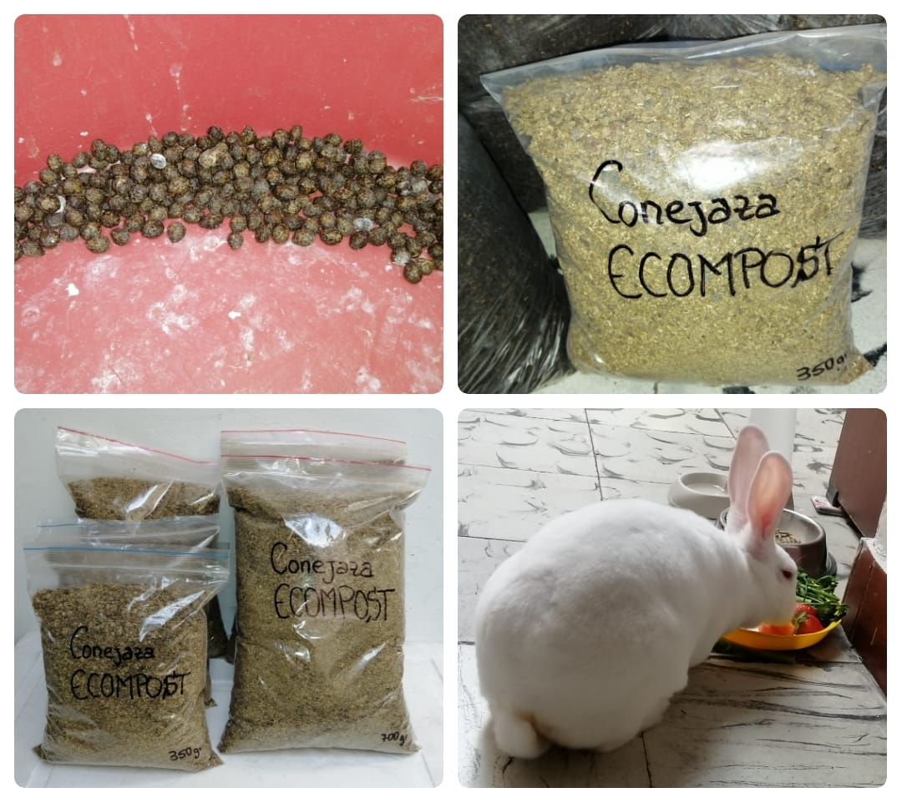

La conejaza es un abono orgánico producido por los conejos, este abono tiene unas propiedades excelentes para todo tipo de plantas, brindando gran variedad nutrientes y minerales que favorecen el crecimiento y desarrollo de estas, haciendo de este abono ideal para mantener una buena calidad de sustrato para plantado, mantener el equilibrio de la microbiota del suelo y además goza de que su producción es realmente limpia y amigable con el medio ambiente. Laquesis, nuestra mascota, se alimenta de manera que los excrementos que produce son aptos para ser llevados bajo un proceso de secado y pulverización, convirtiendolos así en un abono excelente para el suelo, aportando Nitrógeno, Potasio, Fósforo, Calcio, Magnesio y Zinc.
En Ecompost hacemos enfasis en el bienestar animal, por eso nuestro metodo de producción contribuye a una alimentación balanceada, además de ello, se aprovecha la materia que ella produce de forma natural, estarías comprando así, a la producción de abonos libres de maltrato animal.
$12.000 COP c/u (Contiene 750g)